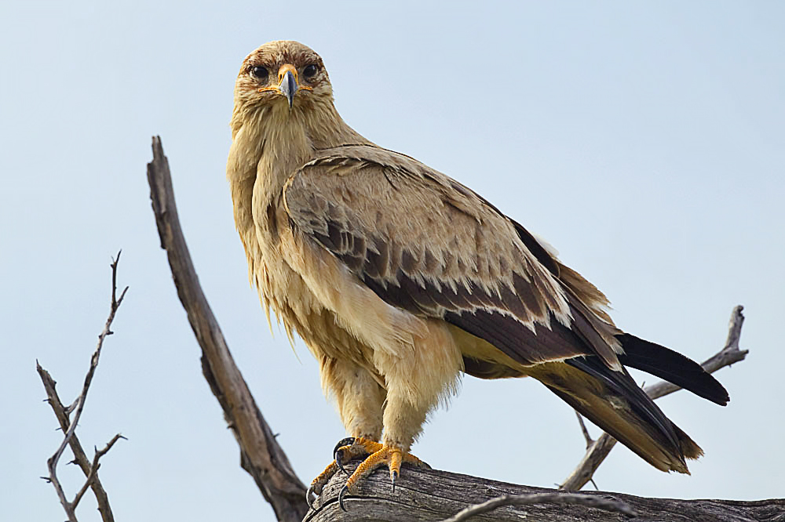
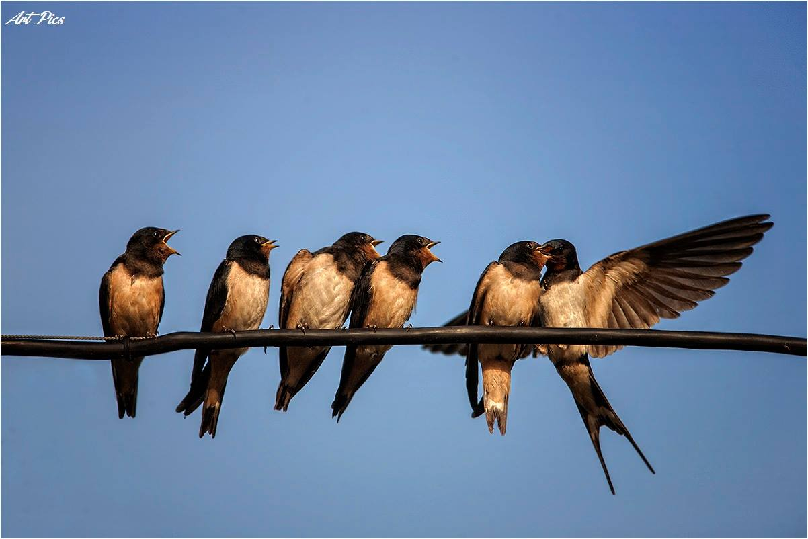
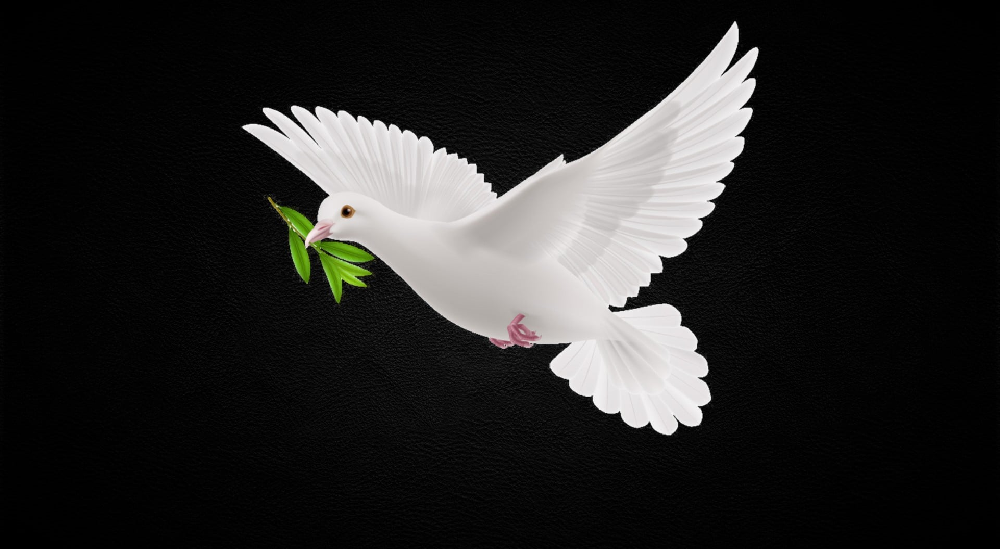
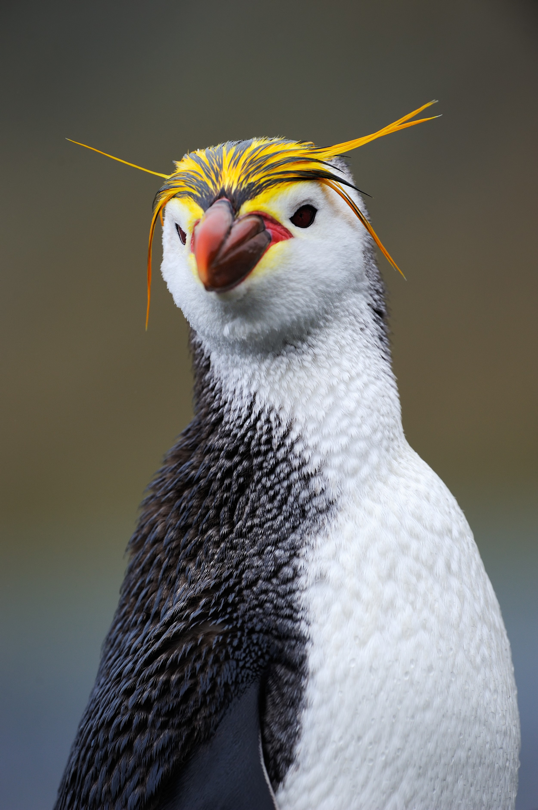
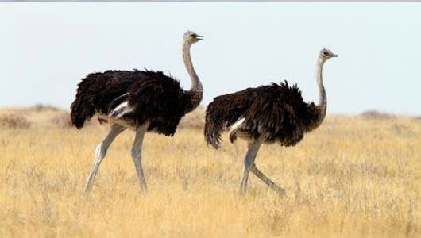

არწივი[1] (ლათ. Aquila) — ფრინველების გვარი ქორისნაირთა რიგისა.[2] სხეულის წონა 6 კგ-მდეა (მთის არწივი), ფრთების შლილი 2–2,5 მ-მდე. თითები ბუმბულით შემოსილია გალომდე. გარეთა და შუა თითების ბრჭაყელი ძლიერ განვითარებულია, ფრთები — გრძელი და განიერი, ბოლო — მომრგვალებული. მამალი და დედალი ერთნაირი შეფერილობისაა. ცნობილია 14 სახეობა.[2] გავრცელებულია ევრაზიაში, აფრიკასა და ჩრდილოეთ ამერიკაში. ცხოვრობს ტყეებში, ველებზე, ნახევრად უდაბნოებში, უდაბნოებში, მთამაღალზე. ბუდეს იკეთებს ხეებზე, კლდეებზე ან მიწაზე. დებს 1–3 კვერცხს, კრუხობა გრძელდება 40–45 დღეს. იკვებებიან პატარა და საშუალო ზომის ხერხემლიანი ცხოველებით, ზოგჯერ მძორითაც. ყველა არწივი (გარდა მთის და ქორისებრი არწივისა) სასარგებლოა, ვინაიდან ანადგურებს მავნე მღრღნელებს. შუა აზიაში მთის არწივს ათვინიერებენ და სანადიროდ იყენებენ. საქართველოში გვხვდება არწივის 6 სახეობა: მცირე არწივი, მყივანი არწივი, ბეგობის არწივი, ველის არწივი, მ. შ. არის როგორც მობინადრე, ისე მიმომფრენი სახეობები.მთის არწივი[1][2] (ლათ. Aquila chrysaetos) — ფრინველი ქორისნაირთა რიგისა. მისი სხეულის სიგრძეა 76–89 სმ, ფრთების შლილი 190–227 სმ,[3] მასა 6,5 კგ-მდე; დედალი მამალზე დიდია.[4] აქვს შედარებით მოკლე, მაგრამ ძლიერი ნისკარტი, პროპორციულად გრძელი კუდი და ფრთები,[3] რომლების ბოლოებზე ბუმბული თითებისებურადაა განლაგებული,[5] გრძელი ბრჭყალები.[6] ზრდასრული მუქი ყავისფერია, ოქროსფერი თავით. კუდის ბოლოში აქვს ფართო შავი ზოლი. იგი მკვეთრად ეტყობა ახალგაზრდას, რომელსაც თეთრი კუდის ძირი და ამავე შეფერილობის თეთრი ლაქები აქვს ფრთებზე.[3] ფრთის ქვედა მხარე მუქი მურაა.[6] ხმა — თავისებური ყივილი „კეკ-კეკ-კეკ“ გავრცელებულია ევრაზიის, ჩრდილოეთ აფრიკისა და ჩრდილოეთ ამერიკის ტყის ზონასა და მთიანეთში.[1][7] ეტანება ფართო ღია სივრცეებს: ჭაობებს, მდინარეთა ხეობებს, ტბების ქვაბულებს, ვერან ადგილებს; მთებში ჩვეულებრივ სახლობს ტყის ზედა საზღვრის მაღლა.[4] საქართველოში გავრცელებულია სპორადულად,[7] გვხვდება მთის არწივის ქვესახეობა — სამხრეთევროპული მთის არწივი (ლათ. Aquila chrysaetus fulvus).[1] მკვიდრი ფრინველია;[5] თუმცა, ზამთარში მათი ნაწილი სამხრეთისკენ მომთაბარეობს. გამოირჩევა მცირე რაოდენობით. ცხოვრობს კლდეებსა და მაღალ ხეებზე, იშვიათად ვაკე ადგილებზე — კლდოვან ქანებზე, უდაბნოში — შავი საქსაულის ხეებზე.[7] შეუძლია დიდხანს ლივლივი.[4] ძლიერი მტაცებელია, შეუძლია თავისზე დიდი მსხვერპლის დაჭერა.[3] იკვებება მღრღნელებით, ლეშით, კურდღლებით, ფრინველებით, ამფიბიებით, ქვეწარმავლებით, მწერებით.[1] ნადირობს ღია სივრცეში,[5] პირდაპირ თავდასხმით ან ყარაულით. დედალ-მამალი ხშირად ერთად ნადირობს.[4] მღრღნელთა განადგურებით სოფლის მეურნეობისათვის სარგებლობა მოაქვს.[8] სქესობრივ სმწიფეს 4–5 წლის ასაკში აღწევს.[7] მონოგამური ფრინველია, ანუ ქმნის მუდმივ წყვილებს (ერთ-ერთის სიკვდილამდე).[1][4][7] საქორწინო ფრენას იწყებს თებერვალში. აქვს 2–4 ბუდე, რიგრიგობით ხმარობს და კონსერვატიზმს იჩენს მათ მიმართ.[1] თავის მხრივ, ბუდე წარმოადგენს ტოტების ნაყარს, რომელიც თხლად არის ამოფენილი მშრალი ბალახით. ყოველწლიური შეკეთების გამო ზოგჯერ გიგანტურ ზომას აღწევს — სიგანესა და სიმაღლეში 2 მეტრამდე. მარტ-აპრილში დებს 1–2–3 ჭუჭყიანი თეთრი ფერის მურალაქებიან კვერცხს.[5][7] ინკუბაცია გრძელდება 40–45 დღე, კრუხობს ორივე მშობელი. თუკი პირველი ბუდის მართვეები დაიღუპნენ, ბუდობს მეორედაც. მართვეები შებუმბვლას იწყებენ მაისის დასაწყისში და ივნისის ბოლოსკენ მთლიანად იმოსებიან. დაახლოებით 80 დღის ასაკში ბუდეს ტოვებენ. მთის არწივი ტყვეობაშიც მრავლდება (მაგ., 1 წყვილი გამრავლდა არკანზასის შტატის ქალაქ ტოპიკაში).[7] ჩრდილოეთით მობუდარ არწივთა მართვეები ხშირად აგრესიულები არიან და უფროსი უმცროსს ჭამს, რაც განპირობებულია მკაცრი ბუნებრივი პირობებით — მშობლები ვერ ახერხებენ მათ სრულყოფილად გამოკვებას.[6] 1976 წლის მონაცემებით, თბილისის ზოოპარკში იმყოფებოდა 2 მთის არწივი (მაშინდელ სსრკ-ში სულ — 38).[7] მოყვარული მონადირეები (მაგ., შუა აზიაში) მთის არწივის მართვეს წრთვნიან და იყენებენ როგორც ბაზს — მელიებზე, კურდღლებზე, იშვიათად მგელზე, ჯეირანზე და სხვა ცხოველებზე სანადიროდ.[1][4] მისი მრავალი ადგილსამყოფელი განიცდის ადამიანის ზემოქმედებას. ამის გარდა, რიცხოვნობა შეამცირა ბუდეების მოშლამ.[7] შეტანილია საქართველოს „წითელ ნუსხაში“.[9]მყივანი არწივი (Aquila clanga), ფრინველი შავარდნისნაირთა რიგისა. გავრცელებულია ევროპასა და აზიაში. საქართველოში გვხვდება მიმოფრენისას (მარტ-აპრილისა და ოქტომბერ-ნოემბერში). ბინადრობს ტყეში და ველ-მინდვრებზე. ბუდეს იკეთებს ხეზე, მაისში დედალი 1-2 კვერცხს დებს. კრუხობა 6 კვირამდე გრძელდება. იკვებება მღრღნელებითა და წვრილ-წვრილი ფრინველებით. ბეგობის არწივი[1][2] (ლათ. Aquila heliaca) — მტაცებელი ფრინველი ქორისნაირთა რიგისა.[3] სხეულის საერთო სიგრძე 72–84 სმ აღწევს,[1] ფრთების შლილი 180–215 სმ,[4] მამლის მასა 2,4–4,0 კგ, დედლისა — 2,8–4,5 კგ;[5] დედალი მამალზე დიდია.[1] საერთო შეფერილობა მოყავისფრო-შავია. მოყავისფრო თხემი და კეფა კონტრასტულად ჩანს მუქ ყელთან[4] და მკვეთრად ემიჯნება მუქ შუბლს.[6] შედარებით მოკლე კუდი ბოლოვდება ფართო შავი არშიით, გასდევს მუქი ფერის მრავალი ვიწრო ზოლი,[4] ზედა მხარე ღია ნაცრისფერია.[6] მხრებზე აყრია პატარა თეთრი ლაქები. ახალგაზრდა ფრინველი უფრო ღია ფერისაა[4] — საერთო შეფერილობით მოყვითალო-ჟანგისფერი, ზურგზე მურა, მუცელზე — წითურ-ყავისფერი,[7] გასდევს მუქი ღერძულა ზოლები. მეორე ხარისხის მომქნევი ბუმბულების მოსაზღვრე პირველი ხარისხის მომქნევები ღია ფერისაა.[6] სქესობრივი დიმორფიზმი არ გამოიხატება.[1] ფრენის დროს ფრთებს ღრმად და მძიმედ იქნევს;[4] ბოლოებზე განლაგებული ბუმბულები თითისებურად ჩანს, კუდი — ძალიან მოკლედ. ხმა — ძლიერი „კიავ-კიავ“.[7] გავრცელებულია სამხრეთ სლოვაკეთიდან და ბალკანეთიდან (მ. შ. უკრაინისა და რუსეთის სამხრეთში)[8] წინა აზიისა და სამხრეთ ციმბირის გავლით მონღოლეთსა და ჩრდილო-დასავლეთ ინდოეთამდე. ბინადრობს სტეპებში, ტყესტეპსა და უდაბნოებში.[5] იზამთრებს სამხრეთით, ნილოსის ხეობიდან აღმოსავლეთ ჩინეთამდე, მკვიდრი პოპულაციებია წინა აზიასა და ბალკანეთზე,[5] ზოგჯერ მომთაბარეობს.[7] ცხოვრობს მარტო ან წყვილებში. უპირატესობას ანიჭებს ადგილებს კუნძულოვანი ტყეებით ან ფრაგმენტული ხის და ბუჩქნარის მცენარეულობით,[5] მეჩხერ, ფოთლოვან და შერეულ ტყეებს; მთებში ბუდობს ზღვის დონიდან 1400 მეტრამდე.[5] საქართველოში გვხვდება ერთეული წყვილების სახით ორბეთის მიდამოებში, თეთრიწყაროს, ახალციხის, ახალქალაქისა და ნინოწმინდის მუნიციპალიტეტებში, ვაშლოვანის ნაკრძალის შემოგარენში;[8] შეინიშნება გადაფრენისასაც.[6] ვერტიკალურად აღწევს 2000 მეტრამდე.[1][8] აღმოსავლეთ საქართველოში მოზამთრე ფრინველია, დასავლეთ საქართველოში — მიმომფრენი.[1] ჩვენში მეტად მცირერიცხოვანია. 1976 წლის მონაცემებით, ერთი ეგზემპლარი ფიქსირდებოდა თბილისის ზოოპარკში, ერთიც — თბილისის სახელმწიფო უნივერსიტეტის ხერხემლიანთა ზოოლოგიის კათედრაზე.[8] ქმნის მუდმივ წყვილს (ერთ-ერთი პარტნიორის სიკვდილამდე). ბუდეს იკეთებს ხეზე ან ბუჩქზე (1–25 მეტრ სიმაღლეზე), იშვიათად კლდეზე ან მიწაზე,[5] მაღალი ძაბვის გადამცემ ბოძებზეც.[4][9] მასალად იყენებს ტოტებს. აპრილში დებს 1–4 (ჩვეულებრივ 2–3) თეთრ კვერცხს.[7] დედალ-მამალი კრუხობს 43 დღის მანძილზე. აღსანიშნავია, რომ, ჩვეულებრივ, ხმარობენ 2 ბუდეს.[8] 60–77 დღეში მართვეები ბუდეს ტოვებენ.[5] უმთავრესად კვებება 5 კგ-მდე (ჩვეულებრივ 25–1500 გ) მასის ძუძუმწოვრებით, უპირატესად მღრღნელებით,[5] ზოგჯერ თავს ესხმის კურდღლს;[1] იშვიათად მის რაციონში შედის ფრინველები, ქვეწარმავლები და მძორი, ზოგჯერ თევზი და დიდი ზომის მწერები.[5] სპობს სოფლის მეურნეობის მავნებლებს — თრიებს, ზაზუნებს, მემინდვრიებსა და სხვებს.[1] ნადირობს ღია ადგილებში. მსხვერპლს იჭერს მიწაზე ან წყალში, ჩვეულებრივ უთვალთვალებს მას ჰაერიდან; უწინ ამ არწივებს ხშირად ხედავდნენ ყორღანებზე და სხვა ტიპის სამარხებზე შემომჯდარს,[5] ძირითადად ცუდი ამინდის დროს, როდესაც ჰაერში ლივლივის საშუალება არ ჰქონდათ.[9] რაოდენობა შემცირებულია მთელი არეალის ფარგლებში. მისი მიზეზებია: სწრაფი ანთროპოგენიზაცია, შემაწუხებელ ფაქტორთა ზრდა, საკვები ბაზის შემცირება.[8] შეტანილია IUCN-ისა[10] და საქართველოს „წითელ ნუსხებში“.[11]

მერცხლისებრნი (ლათ. Hirundinidae) — ფრინველთა ოჯახი ბეღურასნაირთა რიგისა. მათი სხეულის სიგრძე 10-23 სმ აღწევს. გავრცელებული არიან მთელ დედამიწაზე, არქტიკისა და ანტარქტიკის გარდა. ცნობილია 79 სახეობა. საქართველოში მობუდარი გადამფრენია: ქალაქის მერცხალი (ლათ. Delichon urbica), სოფლის მერცხალი (ლათ. Hirundo rustica), მენაპირე მერცხალი (ლათ. Riparia riparia), მთის მერცხა (ლათ. Ptyonoprogne rupestris), წელწითურა მერცხალი (ლათ. Hirundo daurica). მერცხლისებრთა ბუდეს ნახევრად სფეროსებური ან ბრტყელი მათარის ფორმა აქვს. ზოგი მდინარისპირა ციცაბო თიხნარ ნაპირებში თხრის სოროს, ზოგი კი ხის ფუღუროში ბუდობს. ხშირად ქმნიან კოლონიებს. მერცხლისებრნი იკვებებიან მწერებით, რომლებსაც ჰაერში იჭერენ. მხოლოდ 1 სახეობა ჭამს ღვიის კენკრას მერცხალები (ლათ. Glareolinae) — ფრინველთა ქვეოჯახი მერცხალასებრთა ოჯახისა. აერთიანებს ორი გვარის (მერცხალა და Stiltia) 8 სახეობას. გამოირჩევიან მოკლე ფეხებითა და ნისკარტით, პირის ფართო ჭრილი თვალების დონემდე აღწევს. თავი მსხვილია, თვალები დიდი, კისერი მოკლე, ფრთები გრძელი და მახვილი, ბოლო ორკაპა. სხეულის სიგრძე 17–29 სმ-ს შეადგენს, მასა 50–200 გრამს აღწევს. შეფერილობის ძირითადი ფონი ერთფეროვანია, თიხისფერი, მუცელი უფრო ღია, ბოლოს ზედა და ქვედა მხარე თეთრი, ნისკარტის ძირში, ყელსა და კისერზე მკრთალი ნახატია. გავრცელებული არიან ევრაზიის, აფრიკისა და ავსტრალიის ღია მშრალ ლანდშაფტებში. ჰაერში იჭერენ დიდი ზომის მწერებს, საკვებს მიწაზეც მოიპოვებენ. ბუდობენ კოლონიებად (ასამდე მობუდარი) ან წყვილებად წყალსატევებთან ახლოს ვაკე ადგილებზე. უპირატესობას ანიჭებენ თაყირებს, ბიცობებს, ქვიშის ცელებს და კუნძულებს. ბუდეში 2–4 კვერცხს დებენ. კრუხობასა და ბარტყებზე ზრუნვაში ორივე პარტნიორი მონაწილეობს.ისინი ჩვენთან თბილი ქვეყნებიდან მოფრინავენ, აქ ბუდობენ, მრავლდებიან და ისევ მიფრინავენ... ცხოვრების ასეთი წესიდან გამომდინარე, მათ გარკვეული უნარ–ჩვევები ჩამოუყალიბდათ, რომლის შესახებ, შესაძლო არ იცოდეთ. აქ 7 მათგანს გაგაცნობთ: მერცხლები სიცოცხლის უმეტეს ნაწილს, ფრენაში ატარებენ. ამ ფრინველებმა ფრენის დროს, შეჯვარება და ბარტყების გამოკვებაც კი ისწავლეს. მერცხლის ფრენის საშუალო სიჩქარე – 60 კმ/სთ-ია. თუმცა, ზოგიერთი სახეობას 160 კმ/სთ-მდე სიჩქარის განვითარება შეუძლია. მერცხლებს მოკლე ფეხები აქვთ და სიარულისთვის არც თუ ისე შესაფერისი. ამიტომ, ეს ფრინველები, მიწაზე, საკმაოდ მოუხერხულად მოძრაობენ. მერცხლები მცირე ზომის ფრინველებს მიეკუთვნებიან. მათი სხეულის სიგრძე – 9-დან – 25 სმ-მდე მერყეობს, ხოლო მასა – 10–დან – 60 გრ–მდე დიაპაზონში, ფრინველის სახეობის მიხედვით. გასულ საუკუნეებში, დარწმუნებულები იყვნენ, რომ მერცხლები ზამთარში, ჰიბერნაციაში (იგივე ზამთრის ძილი) ვარდებოდნენ და თან, რატომღაც, წყლის ქვეშ. თუმცა, მერცხლები – გადამფრენი ფრინველები არიან და წყალქვეშ ყვინთვის ნაცვლად, უბრალოდ, იქ მიფრინავენ, სადაც თბილა და გემრიელად "აჭმევენ". მერცხლების ერთ-ერთი მახასიათებელი, რომელიც მათ სხვა ფრინველებისგან განასხვავებს, ის არის, რომ მათ მწერების დაჭერა, ფრენაში შეუძლიათ. არსებობს ნიშანი, რომ მერცხლები, წვიმის მოახლოებისას, დაბლა დაფრინავენ... და ეს სავსებით რეალურ მოვლენასთან არის დაკავშირებული: საქმე იმაშია, რომ წვიმის წინ, ჰაერი ნოტიო ხდება. მწერები კი, განსაკუთრებით პატარა ზომის, მგრძნობიარენი არიან წნევის და ტენიანობის ცვლილებების მიმართ. მაღალი ტენიანობის პირობებში, მათ სიმაღლეზე ფრენა უძნელდებათ და ამიტომ, მიწასთან უფრო ახლოს ყოფნას ამჯობინებენ, სადაც ჰაერი უფრო მკვრივია და წინააღმდეგობაც ნაკლებია... და რადგან, მერცხლები მწერებით იკვებებიან, ისინიც იძულებულნი არიან, მიწის ზედაპირთან ახლოს იფრინონ. მერცხლები სოციალური ფრინველები არიან და ხშირად, კოლონიებად ცხოვრობენ.

მტრედი (ლათ. Columba) — ფრინველთა გვარი მტრედისებრთა ოჯახისა. მოიცავს 35 სახეობას, რომელთაგან საქართველოში ბინადრობს 3: გარეული მტრედი (ლათ. Columba livia), გვიძინი (ლათ. Columba oenas) და ქედანი (ლათ. Columba palumbus). [1] მათი ფრთის შლილი 20–27 სმ, ხოლო მასა 200—650 გრამია. გავრცელებულნი არიან ევროპაში, აზიაში, აფრიკასა და ავსტრალიაში, მათ შორის ყველაზე ფართოდ — გარეული მტრედი, რომელიც ინტროდუცირებულია ყველა კონტინენტზე. გარეული მტრედი[1] ან ვეჟანი მტრედი[2] (ლათ. Columba livia) — ფრინველი მტრედისებრთა ოჯახისა. საკმაოდ მსხვილი მტრედია. მისი სხეულის სიგრძეა 29–36 სმ, ფრთის შლილი 50–67 სმ, ხოლო მასა 265–380 გ. [3] შეფერილია ღია ნაცრისფრად. თავი, კისერი და მკერდი ვეჟანი აქვს, რომელსაც დაჰკრავს მომწვანო-მოყვითალო ლითონისებრი ბზინვარება. ფრთებზე გასდევს მუქი ზოლები. წააგავს ქედანსა და გვიძინს. ფრთები ფართო და წამახვილებულია, კუდი მომრგვალებული, რომლის ბოლო მუქია, დანარჩენი ღია. ფეხები შეფერილია ვარდისფერიდან მონაცრისფრო-შავამდე, ზოგიერთ ინდივიდს ისინი შებუმბლული აქვს.[4] საერთოდ, განსხვავდება ქალაქისა და სოფლის და ველურ ბუნებაში მცხოვრები გარეული მტრედების შეფერილობანი. ნისკარტი ფიქალისფერი-შავი აქვს, რომლის ძირზე ამოზრდილია ცვილიანა. სქესობრივი დიმორფიზმი არ ახასიათებს. ახალგაზრდა, 6–8 თვემდე ინდივიდები მოწითალო-მონაცრისფრო ფერისანი არიან.[4] გადაადგილდება მიწაზეც და ცაშიც, შეუძლია ხეებზე გაჩერებაც. ფრენისას ავითარებს 185 კმ/სთ სიჩქარეს.[5] გავრცელებულია ევროპაში (მათ შორის საქართველოშიც, ფრაგმენტულად მცირე, ცენტრალურ, სამხრეთ, აღმოსავლეთ და სამხრეთ-აღმოსავლეთ აზიაში, აგრეთვე ავსტრალიაში, ჩრდილოეთ და სამხრეთ აფრიკაში, ჩრდილოეთ და სამხრეთ (მცირედ) ამერიკებში. ბინადრობს მინდვრებში, კლდოვან და ადამიანებით დასახლებულ ადგილებში. დაწყვილებას იწყებენ გაზაფხულის დასაწყისში.[6] წელიწადში ბუდობენ 7–8-ჯერ. დედალი დებს 2 (იშვიათად 1) კვერცხს ორი დღე-ღამის ინტერვალით. ისინი თეთრია, ნაჭუჭი — გლუვი და ბრჭყვიალა, ზომებით 35×25-დან 43×32 მმ-მდე.[7] ორივე მშობელი რიგრიგობით კრუხობს, მაგრამ დედალი უფრო მეტ დროს ატარებს ბუდეში. ინკუბაცია გრძელდება 16–19 დღე-ღამე.[8][9] თავდაპირველად ბარტყებს ჩიჩახვიდან ამოღებული საკვებით, ე. წ. „ჩიტის რძით“ კვებავს. შემდეგ მათ რაციონში ემატება მცენარეთა თესლები. ისინი ფრენას 35–37 დღეში სწავლობენ.[8][9] ზრდასრულობას 5–7 თვეში აღწევენ. გარეული მტრედი იკვებება თესლებით, კენკრითა და ნაყოფებით. მისი ბუნებრივი მტრები არიან: შავარდენი, ალალი, მთის არწივი, ჩვეულებრივი და ბეღურასებრი კირკიტა, მიმინო, ოლოლი, ვირჯინიული ზარნაშო, კატა, ოპოსუმი, ენოტი, მელა და სხვ.

პინგვინისნაირნი (ლათ. Sphenisciformes) — ფრინველთა რიგი. მოიცავს მხოლოდ 1 ოჯახს — პინგვინისებრნს (ლათ. Spheniscidae), რომელშიც ერთიანდება 6 გვარი და 17 სახეობა. მასა — 1,5-45 კგ, სხეულის სიგრძე 40-120 სმ. პინგვინისნაირნი ვერ ფრენენ, კარგად ცურავენ (36 კმ/სთ) და ყვინთავენ (20 მ-მდე). აქვთ საცურაო აპკით შეერთებული 3 თითი. ფრთა გადაქცეულია ფარფლად. ფეხები ცურვისას ასრულებენ საჭის როლს. გავრცელებული არიან ანტარქტიდის ნაპირებთან, სუბანტარქტიდის კუნძულებზე, ავსტრალიის, აფრიკისა და სამხრეთ ამერიკის სამხრეთ ნაპირებზე, გალაპაგოსის კუნძულებზე. ბუდობენ დიდ კოლონიებად, ზოგი — წყვილებად ან პატარ-პატარა გუნდებად. დებენ 1-2 კვერცხს, იკვებებიან თევზებით, თავფეხიანი მოლუსკებითა და კიბოსნაირებით.პინგვინთა ორდენის ყველაზე დიდი და მნიშვნელოვანი წევრი არის იმპერატორის პინგვინი. 10 თვის განმავლობაში ამ სახეობის წარმომადგენლები ცხოვრობენ ანტარქტიდაში. მკვლელი ვეშაპები ითვლება პინგვინების ერთ-ერთ ყველაზე საშიშ მტრად . არ იციან სად არის მტერი, ეს ფრინველები იკრიბებიან ნაპირის გასწვრივ და ელოდებიან, სანამ ერთ-ერთი მათგანი გაბედავს წყალში ჩაძირვას. თუ „გაბედული კაცი“ ცოცხალი დარჩება, მთელი სამწყსო მიჰყვება მას. იცოდით, რომ გალაპაგოს პინგვინები ცხოვრობენ ამავე სახელწოდების კუნძულებზე, სადაც ტემპერატურა +16 ⁰С-ს აჭარბებს? პინგვინები არ გრძნობენ სიცივეს ცხიმის სქელი ფენის და ასევე მჭიდროდ მორგებული ბუმბულის წყალობით. საინტერესოა, რომ პოლარული პინგვინები უძლებენ 60 გრადუს ყინვებს! პინგვინები ფეხებში არ გრძნობენ სიცივეს, რადგან მათ პრაქტიკულად არ აქვთ ნერვული დაბოლოებები. იმპერატორის პინგვინი მონოგამია. მეწყვილე რომ იპოვეს, ისინი თავიანთი ნახევრის ერთგულები რჩებიან დღის ბოლომდე. პინგვინი ძალიან მგრძნობიარეა შთამომავლობის მიმართ. არის შემთხვევა, როცა გეოლოგებმა გადაწყვიტეს მათგან კვერცხის მოპარვა, რათა ეჭამათ. როგორც კი ქურდობა ჩაიდინეს, პინგვინების უზარმაზარი ფარა დაედევნა. საინტერესო ფაქტია, რომ ჩიტები უბრალოდ ჩუმად დადიოდნენ "ქურდების" უკან, რის შედეგადაც მათ მოუწიათ კვერცხის მიცემა. ამის შემდეგ დევნა მაშინვე შეწყდა. იცოდით, რომ ჯენტუ პინგვინებს შეუძლიათ წყალქვეშ ბანაობა 35 კმ/სთ სიჩქარით? ეს საყვარელი არსებები ხშირად მოძრაობენ ყინულზე მუცელზე. ფრთებითა და ფეხებით ზედაპირის მოშორებით, მათ შეუძლიათ ბევრად უფრო სწრაფად დაფარონ დიდი მანძილი. როგორც წესი, პინგვინები თევზაობენ არაღრმა სიღრმეზე, მაგრამ საჭიროების შემთხვევაში მათ შეუძლიათ წყალში ჩაძირვა 200 მ-მდე. საინტერესო ფაქტია, რომ პინგვინი ერთადერთი ფრინველია პლანეტაზე, რომელსაც შეუძლია ვერტიკალურად გადაადგილება. კლდის პინგვინები განსაკუთრებით აგრესიულები არიან. თუ რამე არ მოსწონთ, შეუძლიათ ნებისმიერ არსებას დაესხნენ თავს. ყოველწლიურად, პინგვინები ზრდიან ახალ ბუმბულებს ძველი ბუმბულის შესაცვლელად. ამ ფრინველების სხეულში არის სპეციალური ჯირკვლები, რომლებიც ფილტრავს მარილს. ამ მიზეზით მათ თავისუფლად შეუძლიათ ზღვის წყლის დალევა. იმპერატორის პინგვინები სანადიროდ დადიან დაახლოებით 2-ჯერ თვეში. გაჯერებამდე ჭამენ, მათ შეუძლიათ საკვების გარეშე ცხოვრება დაახლოებით ორი კვირის განმავლობაში, ხოლო წონაში ნახევარამდე დაკლება. საინტერესო ფაქტია, რომ უფროსი თაობა ახალგაზრდებს ნადირობის ყველა სირთულეს ასწავლის. ოქროსთმიანი - ყველაზე გავრცელებული პინგვინის სახეობა პლანეტაზე. მათგან 20 მილიონზე მეტია. პინგვინის ყველა სახეობა ცხოვრობს კოლონიებში, გარდა ბრწყინვალე პინგვინებისა. ასევე, ყველამ არ იცის, რომ იმპერატორ პინგვინებს კვერცხები აქვთ გამოჩეკილი "მამათა" და არა "დედების" მიერ. როგორც მათი გრძნობების გამოხატულება, მამრი სათვალიანი პინგვინი ფრთებით ურტყამს მდედრს თავზე. ანტარქტიდის პინგვინები ბუდეების ასაგებად იყენებენ ქვებსა და მიწას. საინტერესო ფაქტი ის არის, რომ ნათესავებისგან განსხვავებით, ბრწყინვალე პინგვინები ცხოვრების უმეტეს ნაწილს მიწაზე ატარებენ. იმის გამო, რომ პინგვინების ზურგზე შავი ფერია, მათ სხეულს შეუძლია მზის მეტი სითბოს მიღება. Linux კომპანიამ აირჩია პინგვინის გამოსახულება ოფიციალურ ლოგოდ და თილისმად.

სირაქლემა (ლათ. Struthio) — ფრინველთა გვარი სირაქლემასებრთა ოჯახისა. მოიცავს 2 თანამედროვე სახეობას, მათ ქვესახეობებს და რამდენიმე ამომწყდარ სახეობასაც. ადრე ამ გვარში ერთიანდემოდნენ ემუ, ნანდუ და კაზუარი. სომალური სირაქლემა ბოლო დროს იქნა აღიარებული სახეობად, მაგრამ მეცნიერთა ნაწილი ისევ ქვესახეობად მიიჩნევს. აფრიკული სირაქლემა (ლათ. Struthio camelus) — უტროპო არამფრენი ფრინველი სირაქლემასებრთა ოჯახისა. აფრიკული სირაქლემა დღეს არსებულ ფრინველთა შორის ყველაზე დიდი ზომისაა. ბინადრობს აფრიკის სავანებში, ნახევარუდაბნოებსა და უდაბნოებში. მახვილი მხედველობისა და სმენის წყალობით მტაცებლების მოახლოებას შორიდან იგებს. დამფრთხალი სირაქლემა მიწაზე განერთხმება, ან გარბის. დადევნებისას შეუძლია 70 კმ/სთ სიჩქარე განავითაროს. იმ შემთხვევაში, თუ გასაქცევი არ აქვს — თავისი ძლიერი ფეხებით შეტევაზე გადადის. მას ადვილად შეუძლია სასიკვდილო ჭრილობა მიაყენოს ნებისმიერ მტაცებელს. სირაქლემა ყველაზე დიდ კვერცხს დებს, რომელიც 1,4 კილოგრამს იწონის. გავრცელებული აზრი იმის თაობაზე, რომ შეშინებული სირაქლემა თავს ქვიშაში რგავს, მცდარია. სირაქლემასნაირნი (ლათ. Struthioniformes) — უტროპო ფრინველების რიგი. აერთიანებს 1 ოჯახის ორ თანამედროვე სახეობას — 1. აფრიკულ სირაქლემას (ლათ. Struthio camelus), რომელიც გავრცელებულია აფრიკულ ველებსა და ნახევრად უდაბნოებში. ავსტრალიის სამხრეთში გვხვდება გაგარეულებული სახით; 2. სომალური სირაქლემა (ლათ. Struthio molybdophanes), რომელიც ადრე ითვლებოდა ქვესახეობად.[1] სირაქლემა ტანად ყველაზე დიდი ფრინველია. მისი სხეულის სიგრძეა 2,4 მ, მასა 136 კგ. დამახასიათებელია პოლიგამია. ბინადრობს პატარა გუნდების (5-6 ფრთა) სახით, იშვიათად გუნდში 30-40 ფრთაა. ერთ „ოჯახში“ შემავალი 3-5 დედლიდან თითოეული საერთო ორმო-ბუდეში დებს 6-8 კვერცხს. დღისით დედლები კრუხობენ, ღამით — მამალი. ინკუბაცია გრძელდება 5-6 კვირა. იკვებებიან ყლორტებით, ნაყოფრობით, თესლებით, იშვიათად წვრილ-წვრილი ცხოველებით სავარაუდოდ აზიური სირაქლემა ჩამოყალიბდა ცენტრალური აზიის ღია ლანდშაფტში (მონღოლეთი, ჩრდილოეთი ჩინეთი), სადაც გავრცელებული იყო გვიანი მიოცენიდან (საერთოდ გავრცელებული იყო ზედა პლიოცენიდან ქვედა ჰოლოცენამდე). ფართოდ იყო გავრცელებული ევროპასა და აზიაში. მათ შორის ჩრდილოეთ ინდოეთი, პაკისტანი, ბანგლადეში და სამხრეთ ციმბირი. ცნობილია, რომ ჩინეთში იგი გადაშენდა უკანასკნელი გამყინვარების პერიოდის დროს ან მისი დამთავრებიდან მალევე. აზიის კონტინენტის უდიდეს ნაწილში გადაშენების შემდეგ, იგი დიდი ხნის განმავლობაში მაინც შემორჩა შუა აზიის შიდა რეგიონებში, რაც დასტურდება პეტროგლიფებით, აგრეთვე ისტორიულ ქრონიკებსა და ლარნაკების მოხატულობებში. აზიურმა სირაქლემამ არაერთხელ შეაღწია ტრანსბაიკალში. მისი კვერცხის ნაჭუჭი გვხვდება რამდენიმე პალეონტოლოგიურ უბანსა და უძველესი ადამიანის ნამოსახლარში. მისი კვალი შეინშნება რამდენიმე გამოყოფილ რეგიონში, მაგალითად ერევნინის ტბების მიმდებარე ტერიტორიები. მისი კვერცხის ნაჭუჭი პირველად აღმოაჩინა ზოოლოგმა ა. ტუგარინოვმა, 1927 წელს არქეოლოგ გ. სოსნოვსკის და ტროიცკოსავსკის მუზეუმის დირექტორის — პ. მიხნოს მიერ შეგროვებულ არქეოლოგიურ მასალაში. ეს მასალები აღმოჩენილ იქნა მდინარეების სელენგის, ჩიკოის და ჯიდას ნაპირებზე ქვიშის გროვაში, უძველესი დასახლების ადგილზე, განადგურებულ კულტურულ ფენაში (ფენებში). მოცემული ნაჭუჭი იპოვეს პალეოლითის ხანის ქვის იარაღებთან და ძუძუმწოვართა ძვლებთან ერთად, მათ შორის: მამონტი, ბეწვიანი მარტორქა, დომბა. 1954-1956 წლებში ნაჭუჭის ფრაგმენტები აღმოჩენილი იქნა ლ. ივანიევის მიერ ტოლოგოის პალეონტოლოგიური უბნის ორ ჰორიზონტზე, 10-12 და 24-26 მეტრის სიღრმეზე ტერასის ზედაპირიდან. ქვედა ჰორიზონტის ფაუნაში, რომელიც ნეოგენით თარიღდება გამოირჩევა სამთითა ცხენი, აფთარი, ვეფხვი, ხრახნილრქებიანი ანტილოპა, მარტორქა, ხარი, ირემი და სხვ. 1980-1990-იან წლებში აზიური სირაქლემის კვერცხის ნაჭუჭები რიგი სტრატიფიცირებული მრავალრიცხოვანი დასახლებების არქეოლოგიური გათხრებისას — სუხოტინო-4 (ქვედა ჰორიზონტები), სტუდონოე-2, უსტ-კიახტა-17. სტუდონოე-2-ის დასახლებაში, მდინარე ჩიკოისთან ახლოს ნაჭუჭი ნაპოვნი იქნა უძველესი საცხოვრებელი სახლების ნაშთებში, კულტურულ ჰორიზონტებში ⅘ და 5. იგი მდებარეობს ჭალის მე-2 ტერასის ალუვიური დეპოზიტების შუა ნაწილში. ნახშირისა და ძვლებისგან მიღებული რადიოკარბონის გამოკვლევის, გეოლოგიური პირობების გათვალისწინების შედეგად დადგინდა, რომ კულტურული ჰორიზონტები თარიღდება ძვ. წ. XV-VII საუკუნეებით (16-18 ათასი წლის წინ). კვერცხის ნაჭუჭები გამოიყენებოდა ხარისხიან მასალად. მისგან მზადდებოდა მძივები. ტრანსბაიკალის ტერიტორიაზე აზიური სირაქლემას არსებობის საკითხი კვლავ ღია რჩება.